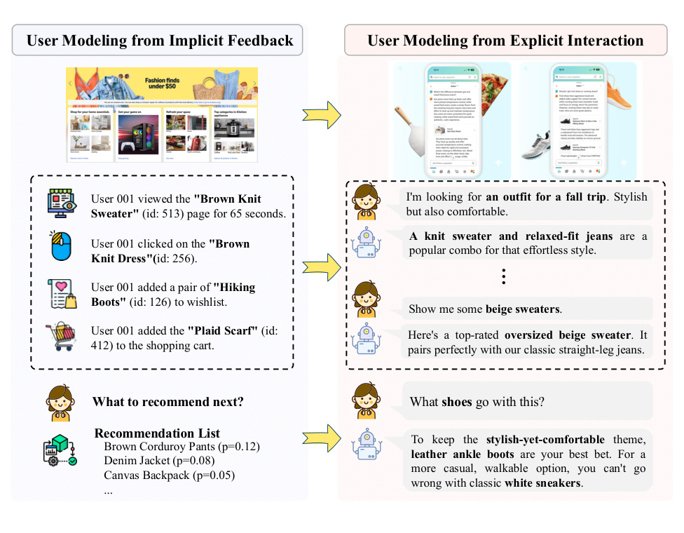
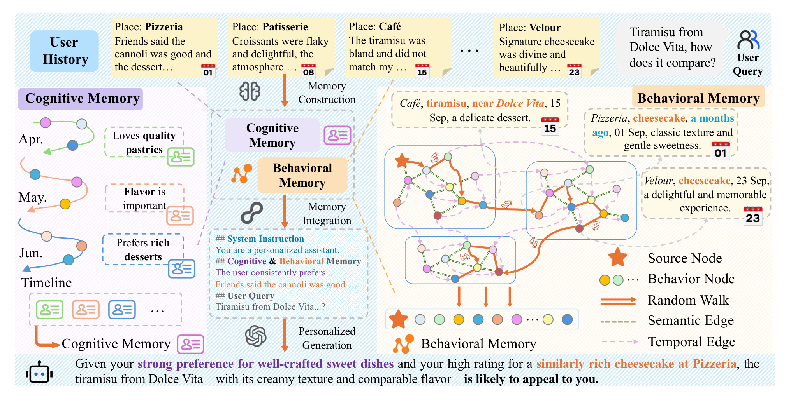
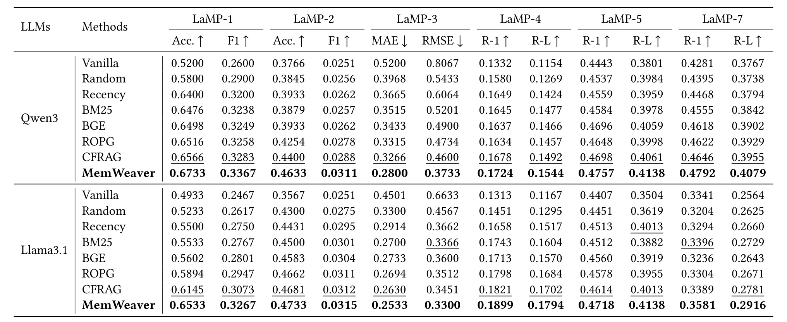
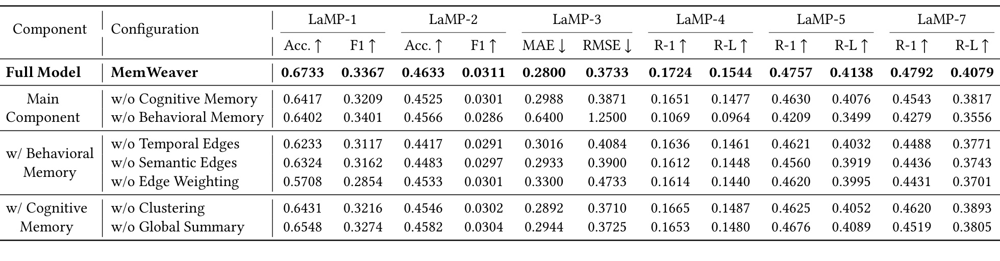
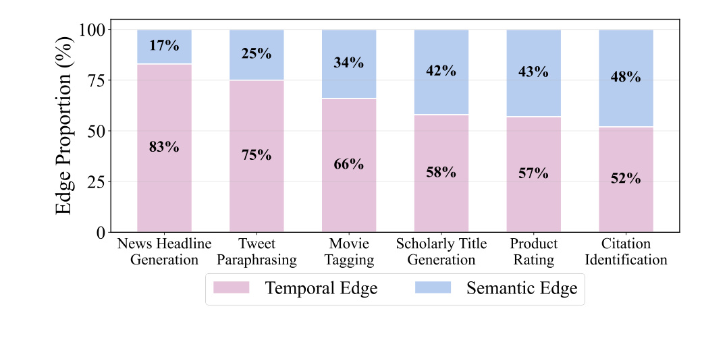
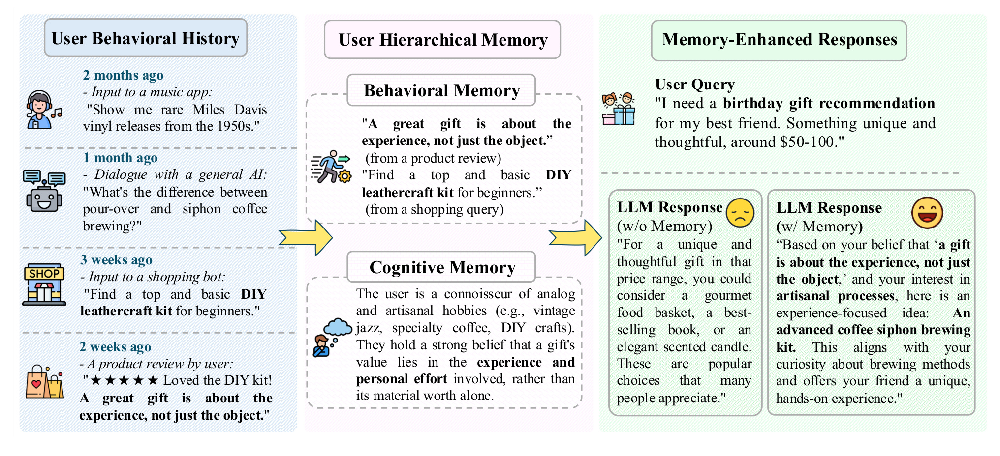
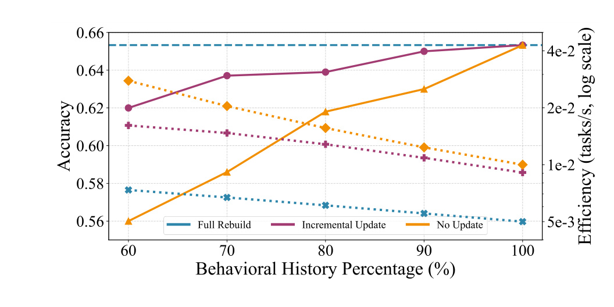

MemWeaver：面向个性化生成的文本交互行为层级记忆
这里精读的是论文《MemWeaver: A Hierarchical Memory from Textual Interactive Behaviors for Personalized Generation》。中文可以叫《MemWeaver：面向个性化生成的文本交互行为层级记忆》。
论文链接：arXiv:2510.07713
作者：Shuo Yu, Mingyue Cheng, Daoyu Wang, Qi Liu, Zirui Liu, Ze Guo, Xiaoyu Tao。
机构：State Key Laboratory of Cognitive Intelligence, University of Science and Technology of China，中国科学技术大学认知智能国家重点实验室。
来源与日期：arXiv cs.CL，首次提交日期为 2025-10-09，当前核验版本为 2026-01-26 的 v2；论文首页标注已发表于 The Web Conference 2026，会议时间为 2026-04-13 至 2026-04-17。
代码/项目页：已核验公开仓库 https://github.com/fishsure/MemWeaver
本地 PDF：已保存于手动笔记目录
去重状态：未发现历史重复笔记。
0. 导读
这篇论文关心的是个性化生成中的一个基础问题：当用户与系统的互动从点击、浏览、购买这类隐式反馈，逐渐转向对话、评论、查询、创作和解释这类文本交互时，用户历史不再只是一个 item ID 序列，而是一条带有语义、时间演化和上下文线索的文本轨迹。传统推荐系统擅长从稀疏行为中学习协同过滤信号，很多 RAG 式个性化方法也会从用户历史中检索若干相关文本片段，但它们通常把历史视为一组扁平文档：要么按相似度取 top-k，要么按时间取最近 k 条，要么把两者做简单融合。论文认为，这种做法没有真正建模用户兴趣如何随时间迁移，也没有利用不同历史行为之间潜在的语义连接。
MemWeaver 的答案是把用户文本历史编织成一个双组件的层级记忆。第一类是 behavioral memory，保留与当前 query 有关的具体行为证据；第二类是 cognitive memory，把长期历史抽象成自然语言偏好画像。它的关键不只是“有记忆”，而是记忆有结构：行为层把每条历史行为看成图节点，用时间边连接相邻行为，用语义边连接同一主题簇中的行为，再用带 query 引导的随机游走抽取相关路径；认知层则先把历史切成语义上相对连贯的阶段，对每个阶段做局部总结，再把阶段总结整合成全局偏好叙事。最后，LLM 同时看到当前 query、具体行为记忆和抽象认知记忆，生成更贴合用户长期偏好和短期意图的回答。
这篇论文和推荐系统、LLM4Rec、Agent memory、RAG 都有交叉。它不像传统推荐论文那样预测点击，也不是单纯做长上下文压缩；它站在“文本交互成为用户建模主信号”的前提上，讨论如何把用户历史组织成可检索、可摘要、可增量更新的记忆。对工程侧更有价值的是，MemWeaver 是 training-free 的框架，实验中使用 Qwen3-8B 和 Llama-3.1-8B-Instruct 作为后端模型，BGE-M3 作为检索/表示模型，主要收益来自记忆构造而不是重新训练大模型。
1. 背景与问题
论文的背景判断很明确：个性化系统正在经历信号形态的变化。过去的用户建模大多围绕隐式反馈展开，例如用户点击了哪个商品、停留了多久、购买了什么、给哪个内容点赞。这些信号足够支撑协同过滤、矩阵分解、序列推荐、图推荐等方法，但它们的语义表达能力有限。一个 item ID 可以告诉系统“用户接触过这个对象”，却不容易告诉系统“用户为什么喜欢它”“用户在什么语境下谈论它”“这个行为与几个月前另一个看似无关的兴趣有什么关系”。
LLM 和对话式产品普及后，用户行为开始包含更丰富的文本。例如用户不是只点了一件毛衣，而是直接说“我要秋游穿的衣服，既舒服又好看”；用户不是只给一部电影打分，而是在评论里写出对节奏、主题、角色关系的细粒度看法；用户不是只收藏论文，而是在问答或写作中暴露自己的研究方向。文本历史天然包含意图、偏好、风格、约束和时间变化，这给个性化生成提供了新的事实源。
难点在于，文本历史更丰富，也更难组织。如果把用户历史直接拼到 prompt 里，会受到上下文长度、噪声和成本限制；如果只做向量相似度检索，容易过度关注当前 query 的表面语义，忽略用户长期兴趣和时间演化；如果只按最近行为检索，又会错过跨时间的主题关联。论文把这个问题概括为：个性化生成需要同时利用用户历史中的 temporal evolution 和 semantic relationships，而现有扁平检索方法通常只能捕捉其中一部分。
这与推荐系统中的长期兴趣建模很像。短期兴趣可以解释用户眼下的意图，长期兴趣可以约束输出风格和偏好边界，语义关联则能把时间上相隔很远但主题相关的行为连接起来。MemWeaver 的贡献是把这三个因素放进一个统一的记忆框架，而不是在 prompt 中简单罗列若干历史片段。
从任务形式看，论文关注 personalized text generation。输入是用户、用户历史、当前 query 和目标回答；目标是让 LLM 基于用户历史生成更个性化的响应。这里的“个性化”不是只预测一个类别，而是涵盖引用识别、电影标签、商品评分、新闻标题生成、学术标题生成、推文改写等多种 LaMP benchmark 任务。分类任务考验用户偏好是否被正确识别，生成任务则考验模型能否把偏好融入文本输出。
2. 核心方法
MemWeaver 的设计可以拆成三层：记忆设计原则、行为记忆构造、认知记忆抽象。最上层原则是把原始历史 H_u 转换为两个互补的记忆表示。behavioral memory 是动态抽取的历史子集，强调细粒度、query-specific、可作为具体证据；cognitive memory 是自然语言总结，强调长期、稳定、抽象和演化。最终生成时，模型不再直接条件化于完整历史，而是条件化于 query、behavioral memory 和 cognitive memory。
行为记忆的第一步是构图。给定某个用户按时间排序的历史文档或交互，MemWeaver 先用预训练句向量模型把每条行为编码成 embedding。论文实现中使用 BGE-M3 作为表示模型。随后对这些行为 embedding 做 K-means 聚类，把历史划分为若干语义簇。每条历史行为对应图中的一个节点，图中有两类无向边：第一类是 temporal edge，连接相邻时间步的行为，用来保留用户行为的时间连续性；第二类是 semantic edge，连接同一个语义簇内的行为，用来捕捉主题相关性。
这一步很关键。只按时间连接，图会退化成链表，跨时间主题很难被召回；只按语义连接，又会忽略兴趣发展顺序。MemWeaver 让同一张图同时具有时间骨架和语义捷径，后续随机游走才能既沿着用户近期轨迹移动，也能跳到语义相关但时间较远的行为。对推荐系统读者来说，这类似于把 sequence graph 和 semantic graph 合在一起，让历史不是一个列表，而是一张可导航的个人记忆网络。
行为记忆的第二步是 context-aware random walk。给定当前 query，系统需要从图中抽取一条或多条与 query 相关的行为路径。论文没有用普通随机游走，而是给每次从节点 u 走向邻居 v 的转移打分。这个分数包含三部分：v 与 query 的语义相关性、v 相对当前 query 的新近程度、u 与 v 之间的时间连续性。语义相关性由 query embedding 和候选行为 embedding 的余弦相似度决定；新近程度由一个指数衰减函数控制；连续性则惩罚时间跨度过大的跳转。三个超参数分别控制语义引导、recency bias 和 continuity bias 的强度。
直观地说，随机游走不是简单“走到最相似的节点”，而是在语义、近期性和局部连续性之间权衡。这样可以避免 top-k 检索过于贪心，也避免随机游走完全脱离当前任务。游走访问到的唯一节点序列构成 behavioral memory，随后作为具体历史证据写入 prompt。
认知记忆解决的是另一类问题：即使抽到了若干具体行为，LLM 仍可能缺少对用户长期偏好的全局理解。MemWeaver 先把用户历史按语义断点切成多个时间阶段。所谓语义断点，是相邻行为之间的语义相似度显著下降，暗示用户关注点可能发生变化。论文还加入规则约束，避免分段过细导致上下文不足，也避免分段过粗把多个主题混在一起。
分段之后，系统用 LLM 做两级总结。第一级对每个时间段生成局部总结，概括该阶段用户兴趣；第二级把所有局部总结合成为全局 cognitive memory，描述用户偏好主题、阶段间联系和兴趣迁移。这样得到的认知记忆不是一串原始行为，而是一段更接近“用户画像”的自然语言。它可以告诉生成模型用户长期偏好什么、最近偏好如何变化、哪些偏好具有稳定性。
最后是 memory-augmented generation。LLM 输入由系统指令、cognitive memory、behavioral memory 和 user query 组成。behavioral memory 提供具体证据，减少空泛个性化；cognitive memory 提供抽象偏好，避免只盯住少数最近行为。论文的核心假设是二者有层级协同关系：行为记忆是地基，认知记忆是上层指导。实验消融也基本支持这个判断。
MemWeaver 还包含增量更新机制。新行为到来时，behavioral memory 不需要重建整张历史图，而是把新行为编码后接入现有图：时间上把旧图最后一个节点连接到新批次第一个节点，语义上对新行为做聚类并建立新边。认知记忆也不直接重读完整原始历史，而是为新批次生成新的局部总结，再把新旧局部总结重新合成为全局画像。这个设计让系统更适合持续增长的用户历史，而不是每次请求都重新处理所有历史。
3. 图表解读

图 1 解释了论文的问题背景：用户建模正在从隐式反馈走向显式文本交互。左侧是传统推荐系统熟悉的行为日志，如浏览、点击、加入购物车、愿望清单；这些信号能推断偏好，但语义较弱。右侧是对话式交互，用户直接表达场景、风格、约束和追问。这个图的重要性在于说明 MemWeaver 不是给旧式 ID 推荐再加一层记忆，而是面向文本化、对话化的用户历史重新组织个性化信号。

图 2 是 MemWeaver 的整体框架。左侧的 cognitive memory 把用户历史切成时间阶段，并总结出“喜欢高质量甜点”“重视风味”“偏好丰富甜品”等抽象画像；右侧的 behavioral memory 把每条行为作为节点，构造语义边和时间边，再通过随机游走选出与当前 query 有关的行为证据。中间 prompt 把两类记忆合并后交给 LLM。这个图把方法的双层性讲得很清楚：它既不是纯画像，也不是纯检索，而是“抽象偏好 + 具体证据”的组合。

表 1 是主结果。论文在 LaMP-1、LaMP-2、LaMP-3、LaMP-4、LaMP-5 和 LaMP-7 六个公开任务上比较 Vanilla、Random、Recency、BM25、BGE、ROPG、CFRAG 与 MemWeaver。Qwen3 后端下，MemWeaver 在 12 个指标上全部最好，例如 LaMP-1 Acc. 从 CFRAG 的 0.6566 提升到 0.6733，LaMP-3 MAE 从 0.3266 降到 0.2800，LaMP-7 R-1 从 0.4646 提升到 0.4792。Llama3.1 后端下也保持全指标第一，说明收益不完全绑定到一个特定 LLM。

表 2 是消融实验。去掉 cognitive memory 后性能下降，但去掉 behavioral memory 的影响更重，尤其 LaMP-3 和 LaMP-4 出现明显崩塌：LaMP-4 R-1 从 0.1724 降到 0.1069。这支持论文的层级解释：具体行为证据是个性化生成的基础，抽象画像更像 refinement layer。细粒度消融中，去掉 edge weighting 的损失很大，说明单纯建图不够，如何给语义、近期性和连续性加权才是行为记忆有效的关键。

图 3 分析了推理时随机游走经过的边类型。所有任务中 temporal edge 的使用比例都超过 semantic edge，说明时间结构确实是用户历史的高频骨架；但语义边在 Citation Identification、Product Rating、Scholarly Title Generation 等任务中的比例明显更高，表示这些任务更依赖跨时间主题关联。结合表 2 可以看到一个有意思的现象：虽然时间边走得更多，去掉语义边的性能损失往往更大。这说明语义边可能不是高频路径，却承担了连接远距离相关行为的桥梁作用。

图 4 是案例分析。用户历史里出现了黑胶、手冲/虹吸咖啡、DIY 皮具和“礼物重在体验而非物品”的评价。无记忆 LLM 给出的是食品篮、畅销书、香薰蜡烛这类泛化建议；MemWeaver 则把行为记忆和认知记忆结合起来，推荐高级虹吸咖啡套装。这个案例说明，个性化生成不是在回答里加一句“根据你的兴趣”，而是把用户长期价值观和具体历史证据转化成更贴合场景的输出。

图 5 展示增量更新策略。Full Rebuild 是精度上界但效率低；No Update 省计算但随着历史增长准确率下降；Incremental Update 在准确率上接近 Full Rebuild，同时效率接近 No Update。这个结果对真实系统很重要，因为用户历史是流式增长的。如果每次新增行为都重建完整记忆，成本会随历史长度上升；如果完全不更新，画像会过时。MemWeaver 的增量设计试图在两者之间找到可部署的折中。
4. 实验与结果
实验数据来自 LaMP benchmark。论文使用六个公开任务：LaMP-1 是个性化引用识别，LaMP-2 是电影标签分类，LaMP-3 是商品评分预测，LaMP-4 是新闻标题生成，LaMP-5 是学术标题生成，LaMP-7 是推文改写。LaMP-6 邮件主题生成没有公开，因此被排除。分类任务报告 Accuracy 和 F1，评分任务报告 MAE 和 RMSE，生成任务报告 ROUGE-1 和 ROUGE-L。
比较方法覆盖了从简单到较强的个性化基线。Vanilla 不使用用户历史，只把 query 交给 LLM；Random 随机选历史文档；Recency 选最近历史；BM25 和 BGE 分别代表稀疏检索和稠密检索；ROPG 通过生成反馈训练检索器；CFRAG 利用偏好相近用户中有用的文档改进检索。这个基线设置比较合理，因为它能区分 MemWeaver 的收益到底来自“用到了历史”，还是来自“比一般检索更好地组织历史”。
主结果有三个值得注意的点。第一，MemWeaver 在 Qwen3 和 Llama3.1 两个后端模型上都取得最优，这说明结构化记忆本身有可迁移性，不完全依赖某个模型的指令跟随能力。第二，Recency 通常强于 Random，说明时间因素确实重要；BGE、ROPG、CFRAG 通常又强于简单时间或稀疏方法，说明语义因素同样重要。第三，MemWeaver 同时显式建模时间和语义，因此在多类任务上稳定胜出，而不是只在某一个任务类型上有优势。
消融实验进一步拆开了贡献。去掉 cognitive memory 后，模型仍有具体行为证据，但长期画像变弱；去掉 behavioral memory 后，只剩抽象画像，很多需要具体上下文的任务性能大幅下降。这符合直觉：用户画像可以告诉模型“此人偏好什么”，但当 query 需要引用具体历史、保持风格或比较近似内容时，具体行为更不可替代。
行为记忆内部的消融更有工程启发。去掉 temporal edge、semantic edge 或 edge weighting 都会下降，其中 edge weighting 的影响尤其明显。这说明问题不只是“把历史建成图”，而是“查询到来时如何在图上导航”。如果随机游走没有 query 语义、新近性和连续性权重，就很容易变成无目标扩散或过度依赖图结构的静态采样。
认知记忆内部的消融显示，去掉 clustering/segmentation 或 global summary 也会下降。这个结果说明直接把全部历史一次性总结成画像并不稳妥。用户兴趣往往有阶段性，如果不先分段，LLM 可能把不同阶段的偏好混合成模糊画像；如果没有全局总结，又难以把阶段摘要整合成可用于生成的高层指导。
附录实验还从三个角度验证鲁棒性：在 OpinionQA、Amazon Reviews、ChangeMyView 等其他个性化数据上，MemWeaver 超过 CFRAG 和 Memory-R1 等基线；在 BM25、BGE、Qwen3-Embedding 等不同检索骨干下，MemWeaver 相比标准 RAG 仍有优势；在 Qwen3-3B、8B、14B、32B 等模型规模上，结构化记忆的收益随模型规模保持稳定。这些结果支持论文的核心说法：收益来自记忆结构，而不只是某个检索器或某个 LLM 的偶然表现。
5. 我的理解
我认为这篇论文最有价值的地方，是把个性化生成中的“用户历史”从 prompt 材料升级成了可维护的记忆对象。很多个性化 RAG 系统的默认做法是把用户历史放进向量库，query 来了就检索 top-k，再把结果塞进 prompt。这个流程简单，但它假设历史片段之间互相独立，且每次请求只需要局部相关文本。MemWeaver 的判断更进一步：用户历史本身有结构，时间相邻行为和语义相近行为分别承载不同信息，系统应该在这种结构上做查询相关的记忆抽取。
这和人类记忆的比喻也比较贴切。人不是看到一个问题就只检索“最相似的一句话”，而是会从一个具体片段联想到相邻经历，再跳到主题相关的远期经历，同时带着对这个人的整体理解来组织回答。MemWeaver 的 behavioral memory 对应这些可被回忆的具体片段，cognitive memory 对应长期形成的抽象印象。虽然这种类比不能作为严格证明，但作为系统设计启发是有用的。
从推荐系统角度看，MemWeaver 对 LLM4Rec 的一个启示是：文本交互历史可能需要同时服务召回、排序和生成解释。行为图可以用于找证据，认知记忆可以用于个性化约束，二者合在一起才能让输出既有依据又不偏离用户长期偏好。特别是在会话推荐、内容创作助手、智能导购、研究助理等场景中，用户目标常常不是固定 item，而是开放式文本结果，传统 item-level embedding 已经不够。
不过我也不认为 MemWeaver 已经解决了个性化记忆的全部问题。它的 cognitive memory 依赖 LLM 总结，behavioral memory 依赖 embedding、聚类和超参数；这些组件都会引入偏差。一个总结如果早期把用户标签写错，后续生成可能长期受影响；一个聚类如果把不同主题混在一起，语义边会把随机游走引到错误路径。论文给出了整体有效性，但生产系统还需要更多监控和纠错机制。
这篇论文也提醒我们，个性化不是越多历史越好。用户历史过长时，全部塞入上下文会带来噪声、成本和隐私风险；只保留最近历史又会忘掉长期偏好。更合理的方向是让系统维护不同粒度的记忆：短期行为、长期偏好、阶段摘要、反例、强约束、弱信号、过期信号。MemWeaver 可以看作这个方向的一个具体实现。
6. 工程启发与复现建议
如果要复现 MemWeaver，我建议先做一个最小闭环，而不是直接复刻全部 LaMP 任务。第一步选一个有用户历史和目标输出的数据集，例如 LaMP-5 或企业内部的用户写作/搜索历史。把每个用户历史按时间排序，并用同一个 embedding 模型编码。第二步实现两类边：相邻行为连时间边，同一 K-means 簇连语义边。第三步做一个 query-aware random walk，记录每次走到哪些节点，并把这些节点写入 prompt。第四步用一个固定 LLM 后端比较 Vanilla、Recency、BGE top-k 和 graph walk 的差异。
实现时要特别注意几个参数。K 的选择决定语义簇粒度，太小会把多个兴趣混在一起，太大则会让语义边稀疏；随机游走长度决定 behavioral memory 的 token 成本和覆盖范围；语义权重 alpha 太高会退化成贪心相似检索，太低则可能走到无关历史；recency 和 continuity 参数要按任务调，因为新闻标题生成这类任务更依赖时间连续性，而引用识别或评分任务可能更依赖跨时间主题关联。
cognitive memory 的复现可以先简化。最小版本可以按固定窗口或语义断点把历史切段，然后对每段用 LLM 生成两三句偏好摘要，再生成全局摘要。上线前不要只检查最终任务分数，还要抽样看画像是否稳定、是否过度推断、是否包含敏感属性、是否把一次性行为误写成长期偏好。用户画像一旦进入 prompt，就会影响所有后续回答，因此需要比普通检索片段更严格的质量控制。
工程部署还要考虑缓存和增量更新。对高频用户，可以缓存 embedding、聚类、行为图、阶段摘要和全局画像；新行为到来时只更新增量部分。对低频用户，可以按需构建简化记忆。对多租户产品，还要给记忆设置生命周期和删除机制，确保用户撤回数据后画像和图节点都能被清理。
评估指标不能只看 ROUGE 或 Accuracy。个性化生成更应该加上事实一致性、用户偏好一致性、过度个性化率、隐私泄露率、延迟、token 成本和更新成本。尤其在商业系统里，用户可能不希望模型把所有历史都显式说出来；好的个性化应该“用到历史”，但不一定“暴露历史”。这点是 MemWeaver 类系统落地时必须额外处理的。
7. 局限与风险
- 论文主要在 LaMP benchmark 和若干附加数据上验证，数据集规模、用户历史形态和线上产品仍有差距。真实系统中的用户历史更脏、更长、更跨域，记忆构造可能更难。
- cognitive memory 依赖 LLM 总结，存在偏见积累和过度概括风险。一次偶然行为可能被总结成稳定偏好，早期摘要错误也可能在后续全局总结中被继承。
- behavioral memory 依赖 embedding 和聚类质量。如果文本很短、噪声大、跨语言混杂或领域术语密集，语义边可能不可靠，随机游走会把无关行为带入 prompt。
- 超参数较多，包括聚类数、随机游走步数、语义权重、新近性衰减、连续性衰减、分段阈值等。论文给出实验分析，但不同业务任务需要重新校准。
- 论文强调 training-free，便于部署，但也意味着框架本身没有通过端到端训练学习最优记忆策略。对于复杂任务，手工权重和启发式分段可能不如学习式策略。
- 个性化记忆涉及隐私与安全。系统可能在生成时引用敏感历史，或把用户过去的临时状态当成长期画像。论文不是隐私保护论文，落地时需要额外的数据治理、可解释和删除机制。
- 主结果以离线 benchmark 为主。离线指标提升不等价于真实用户满意度提升，特别是个性化生成存在“看似贴心但实际冒犯”的风险，需要人评和线上实验补充。
8. 后续跟进
- 跟进 GitHub 仓库中的实现细节，尤其是 random walk、segmentation、global summary prompt、LaMP 数据预处理和超参数配置是否完整公开。
- 用一个中文或中英混合的用户文本历史数据集复现实验，观察 BGE-M3、Qwen3-Embedding、BM25 等不同检索骨干对 MemWeaver 的影响。
- 对 cognitive memory 做人工审查实验，统计画像中的过度推断、过期偏好、敏感属性泄露和事实错误比例。
- 设计在线系统版本：维护用户行为图、阶段摘要、全局画像、删除日志和更新队列，并测量增量更新对 P95/P99 延迟的影响。
- 将 MemWeaver 与长期记忆 Agent、GraphRAG、会话推荐和用户画像系统对比，区分它更适合“生成个性化文本”还是也能服务召回、排序和解释。
- 探索更可控的记忆写入策略，例如为画像区分“稳定偏好”“近期偏好”“一次性偏好”“禁止推断信息”，避免所有历史被同等写入长期记忆。
9. 工程侧补充：把 MemWeaver 放进真实个性化系统
如果把 MemWeaver 用在真实产品里，我会把它拆成离线构建、在线抽取和安全过滤三层。离线层负责把用户历史编码、聚类、分段、总结并生成初始图；在线层根据 query 做随机游走和 prompt 组装；安全层负责过滤敏感历史、限制可引用内容、处理用户删除请求。这样做比在一次请求中即时完成全部处理更稳定，也更符合服务延迟要求。
具体到数据结构，可以把每条行为保存为 behavior_id, user_id, timestamp, text, embedding, cluster_id, metadata。时间边可以隐式由 timestamp 排序得到，语义边可以保存为同簇邻接或近邻索引。cognitive memory 不建议只保留一个字符串，最好保留阶段摘要列表、全局摘要、更新时间、摘要来源行为范围和质量标记。这样当用户删除某段历史时，可以定位哪些摘要受影响并触发重算。
在线 prompt 也需要控制长度。behavioral memory 不应无限增长，而应有明确 token budget。可以先用 random walk 得到候选，再按去重、覆盖度、时间跨度和敏感性做二次筛选。cognitive memory 也可以按任务选择不同粒度：购物助手可能需要品类偏好和价格敏感度，研究助手可能需要领域、写作风格和引用偏好，内容生成助手可能需要语气、禁忌和常用格式。
最后，MemWeaver 类系统需要给用户可控权。用户应该能看到、编辑或清除部分画像；系统也要避免把不确定推断写成绝对事实。个性化的目标不是“最大化使用历史”，而是在用户授权和场景需要的边界内使用最少但足够的历史。这个原则会决定它能否从论文原型变成可靠产品能力。